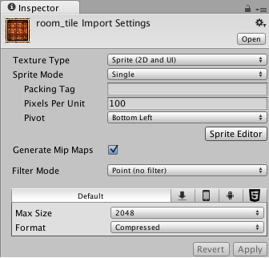
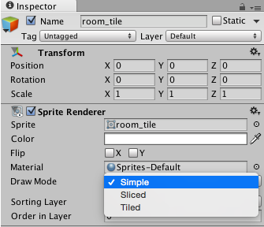
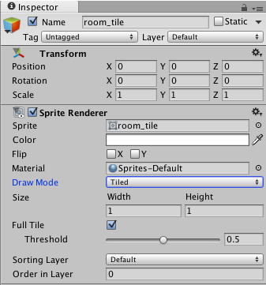
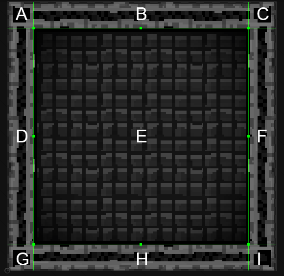
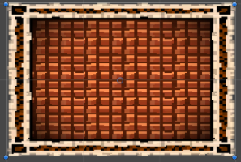
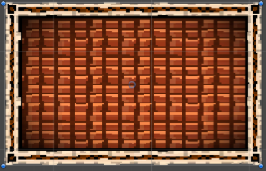
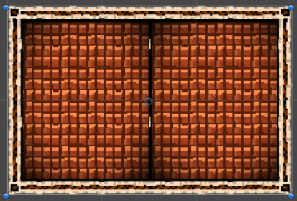
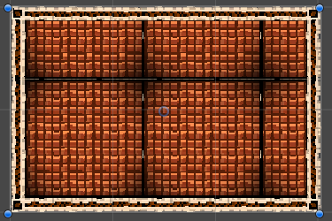
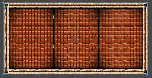

9-Slice
Overview
9-Slicing is a 2D technique which allows you to reuse an image with variable dimensions without preparing multiple assets. You will need to define areas on the image that can be stretched or repeated and areas that will remain a constant size. With these areas defined, you can change the image dimensions, and it will stretch or repeat the defined areas to make the image usable in the new size.
Specifically, corners will remain unchanged, borders will only be stretched lengthwise and the centre of the image will stretch in two dimensions. This will give you a perfectly usable image in a wide range of sizes.
9-Slice Sprite
To have a 9-Slice Sprite, you will first need to define the borders of the Sprite using the Sprite Editor Window.
Bring up the Sprite Editor Window by clicking on the "Sprite Editor" button from the asset's inspector.

In the Sprite Editor Window you define the borders of the Sprite. You can do this either by using the property window or by dragging the green dots in the Sprite.

Click Apply in the Sprite Editor Window.
Drag the Sprite into the Scene view.
In the SpriteRenderer's Inspector, change the "Draw Mode" property to either 'Sliced' or 'Tiled' depending on the desired behaviour.

In either Sliced or Tiled mode, there will be extra properties that you can adjust. To change the dimension of the Sprite, you can either adjust it via the Width/Height property or via the Rect Tool.

Draw Mode

A 9-Sliced image is an image that is divided into nine portions to allow the image to be resized in a sensible way.
For the Corners (marked A, C, G and I) the size will not change no matter what the dimensions of the image are.
The Horizontal Borders (marked B and H) will be repeated horizontally.
The Vertical Borders (marked D and F) will be repeated vertically.
The central section (marked E) will be stretched or repeated both horizontally and vertically.
Simple

Sliced

Tiled

Full Tile and Threshold
The Full Tile and Threshold properties are used to control how the repeatable sections will repeat based on the change of dimensions.
When Full Tile is turned off, the repeated sections will repeat as the dimensions change.

When Full Tile is turned on, the repeated sections will only repeat when the dimensions reach the Threshold specified. The Threshold value is between 0 - 1. When the Threshold value is 1, the image will repeat when the image is stretched to twice the original size.
The following images shows the differences when repeating for an image with the same horizontal dimension but differing Threshold values


Limitations
The 2D Box Collider will automatically reset to the size of the image when the dimensions are changed when in Sliced or Tiled Draw Mode.
The other 2D Colliders do not automatically update when in Sliced or Tiled Draw Mode.
The previous 2D Colliders behaviours still exist when in Simple Draw Mode.